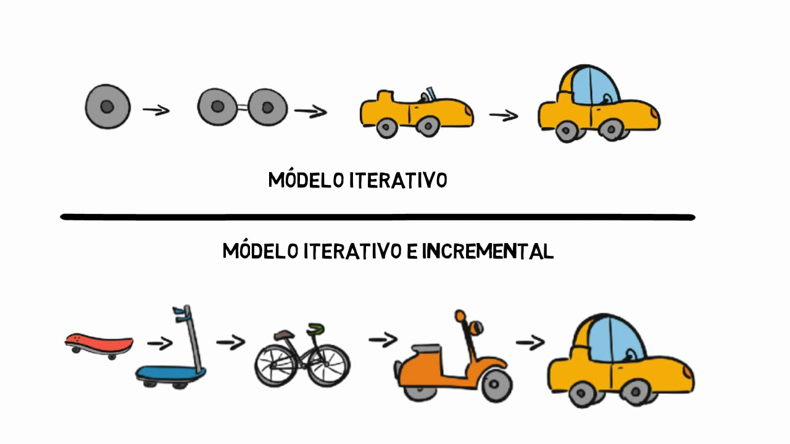

O que é o modelo incremental?
O modelo incremental é uma abordagem no desenvolvimento de software em que o projeto é dividido em pequenas partes chamadas "incrementos". Cada incremento representa uma versão funcional e completa do software que é desenvolvida e entregue de forma independente. A cada incremento, novos recursos são adicionados ou melhorias são feitas no software.
Essa abordagem permite que partes do software sejam entregues mais cedo, possibilitando que os usuários comecem a utilizar e fornecer feedback sobre o sistema em estágios iniciais do desenvolvimento. Além disso, facilita a adaptação a mudanças nos requisitos ao longo do tempo, pois novas funcionalidades podem ser incorporadas em incrementos futuros.
Figura 03 - Representação de como são feitas as etapas do modelo incremental

Quais as etapas do modelo incremental?
O modelo incremental envolve o desenvolvimento do software em etapas incrementais, onde cada incremento adiciona novas funcionalidades ou melhorias ao sistema. As etapas típicas do modelo incremental incluem:
- Planejamento Inicial
- Desenvolvimento do Primeiro Incremento
- Entrega e Avaliação do Primeiro Incremento
- Desenvolvimento de Incrementos Subsequentes
- Testes e Validação Contínuos
- Integração de Incrementos
- Entrega de Incrementos Sucessivos
- Finalização e Manutenção
Essas etapas são realizadas de maneira iterativa, o que significa que o ciclo de desenvolvimento se repete para cada incremento subsequente. Isso permite uma adaptação contínua às mudanças nos requisitos e às necessidades dos usuários.
Figura 04 - Diferença entre os modelos incremental e o iterativo

Quais são as principais diferenças entre o modelo incremental e o iterativo?
O modelo incremental e o modelo iterativo são abordagens de desenvolvimento de software que compartilham algumas semelhanças, mas também têm diferenças significativas em como abordam o processo de desenvolvimento. Aqui estão as principais diferenças entre os dois modelos:
Porém, o desenvolvimento de software tem algumas particularidades que tornam o modelo em cascata inapropriado para a criação desse tipo de produto. Isso leva a diversos contratempos, como:
- Entrega de Software:
Incremental: No modelo incremental, o software é entregue em partes funcionais completas, chamadas de incrementos. Cada incremento é uma versão utilizável do software.
Iterativo: No modelo iterativo, o software é desenvolvido em iterações, que são ciclos de desenvolvimento que podem não resultar em versões totalmente funcionais do software a cada iteração. O objetivo principal é refinar e aprimorar o software ao longo do tempo.
- Foco Principal:
Incremental: O foco principal do modelo incremental está na entrega de funcionalidades funcionais em cada incremento. Cada incremento adiciona novas capacidades ao software.
Iterativo: O foco principal do modelo iterativo está na melhoria contínua do software. Cada iteração visa aperfeiçoar e refinar o software com base no feedback dos usuários e nas lições aprendidas nas iterações anteriores.
- Feedback dos Usuários:
Incremental: O feedback dos usuários é frequentemente coletado após a entrega de cada incremento, permitindo ajustes e melhorias com base nas funcionalidades já implementadas.
Iterativo: O feedback dos usuários é uma parte fundamental do modelo iterativo, com iterações frequentes que se concentram na incorporação de feedback para aprimorar o software.
- Abordagem para Mudanças de Requisitos:
Incremental: O modelo incremental é mais adequado quando os requisitos iniciais são relativamente estáveis, pois os incrementos subsequentes são construídos com base nos requisitos iniciais.
Iterativo: O modelo iterativo é mais flexível em relação a mudanças nos requisitos, uma vez que as iterações permitem a adaptação contínua às mudanças e refinamento dos requisitos.
- Uso de Prototipagem:
Incremental: A prototipagem não é uma característica intrínseca ao modelo incremental, embora possa ser usada em conjunto para entender melhor os requisitos.
Iterativo: A prototipagem é frequentemente incorporada ao modelo iterativo para explorar requisitos e conceitos antes de desenvolver as funcionalidades finais.
Ambos os modelos têm suas vantagens e são escolhidos com base nas necessidades e na natureza do projeto. O modelo incremental é mais apropriado quando os requisitos são relativamente estáveis, enquanto o modelo iterativo é preferível quando a adaptabilidade, a melhoria contínua e a obtenção de feedback constante são essenciais para o sucesso do projeto.